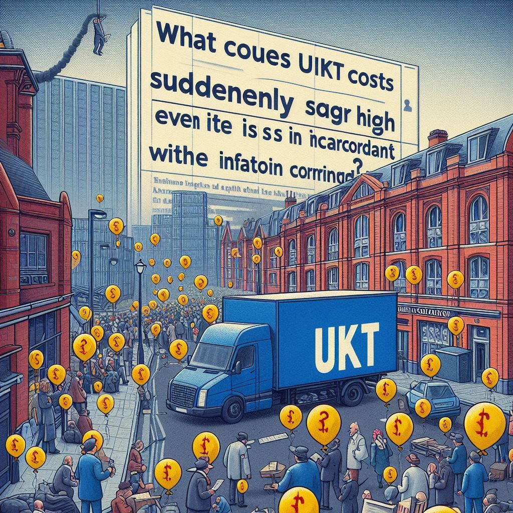

Apakah masalah Judi Online
(JUDOL) Hanya Sebuah
Masalah Yang Sangat Sepele
Sampai Pemerintah Kita Seperti
Sangat Acuh tak Acuh Dengan
Masalah Ini
Judi online atau JUDOL menjadi fenomena yang semakin meresahkan di Indonesia, dengan dampak sosial dan ekonomi yang signifikan. Namun, persepsi publik bahwa pemerintah bersikap acuh tak acuh terhadap masalah ini menimbulkan pertanyaan tentang seberapa serius ancaman judi online dan apa yang seharusnya dilakukan. Artikel ini mengulas kompleksitas masalah judi online di Indonesia, respon pemerintah, dan langkah-langkah yang diperlukan untuk mengatasi isu ini secara efektif.
Berita Penting
Menjadi Blunder dan Kemudian Klarifikasi Apakah Suatu Tradisi Bagi Pejabat di Indonesia Atau ini Berkaitan Dengan Generasi Mereka?
Blunder yang diikuti dengan klarifikasi sering kali mewarnai dunia politik di Indonesia, terutama di kalangan pejabat publik. Artikel ini mengkaji apakah fenomena ini merupakan suatu tradisi yang melekat dalam budaya politik Indonesia atau lebih berkaitan dengan karakteristik generasi pejabat saat ini. Analisis ini juga melihat dampaknya terhadap kepercayaan publik dan stabilitas politik.
Berita Penting

Student Loan: Apakah Jawaban yang Tepat Untuk Mengatasi Biaya UKT yang Tiba-tiba Naik?
Lonjakan biaya Uang Kuliah Tunggal (UKT) di berbagai universitas di Indonesia menimbulkan kekhawatiran di kalangan mahasiswa dan orang tua. Solusi pinjaman mahasiswa (student loan) kini tengah menjadi perbincangan hangat sebagai cara untuk mengatasi masalah ini. Artikel ini mengulas kelebihan dan kekurangan pinjaman mahasiswa, dampaknya terhadap pendidikan tinggi, serta alternatif lain yang mungkin dapat membantu mengatasi kenaikan biaya UKT.
Berita Penting

Apa yang Menyebabkan Biaya UKT Tiba-tiba Melambung Sangat Tinggi Padahal Hal Tersebut Tidak Sesuai Dengan Inflasi yang Terjadi?
Kenaikan biaya Uang Kuliah Tunggal (UKT) di berbagai universitas di Indonesia telah menimbulkan kegelisahan di kalangan mahasiswa dan orang tua. Fenomena ini menimbulkan pertanyaan: apa yang menyebabkan biaya UKT tiba-tiba melambung sangat tinggi, padahal kenaikan ini tidak sesuai dengan laju inflasi yang terjadi? Artikel ini mengulas faktor-faktor penyebab kenaikan UKT yang drastis dan dampaknya terhadap akses pendidikan tinggi di Indonesia.
Berita Penting

.png)